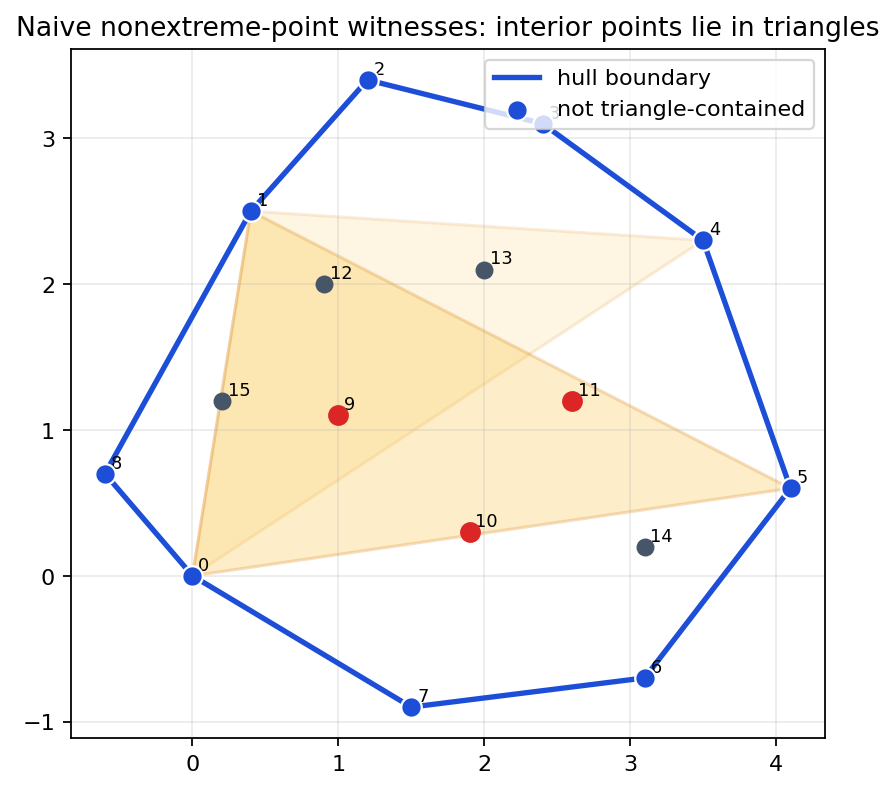
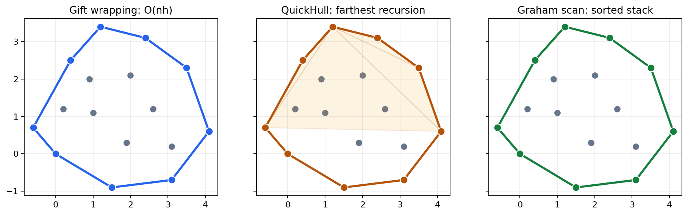
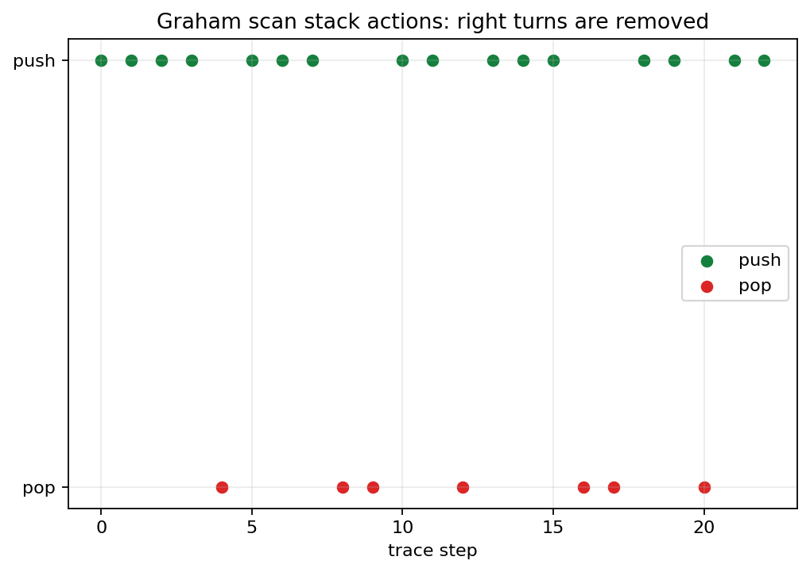
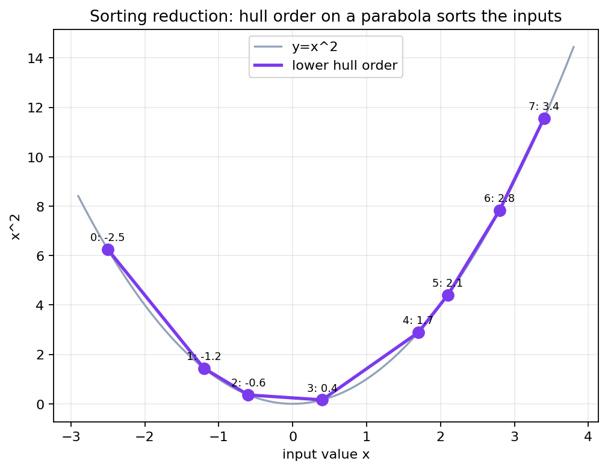
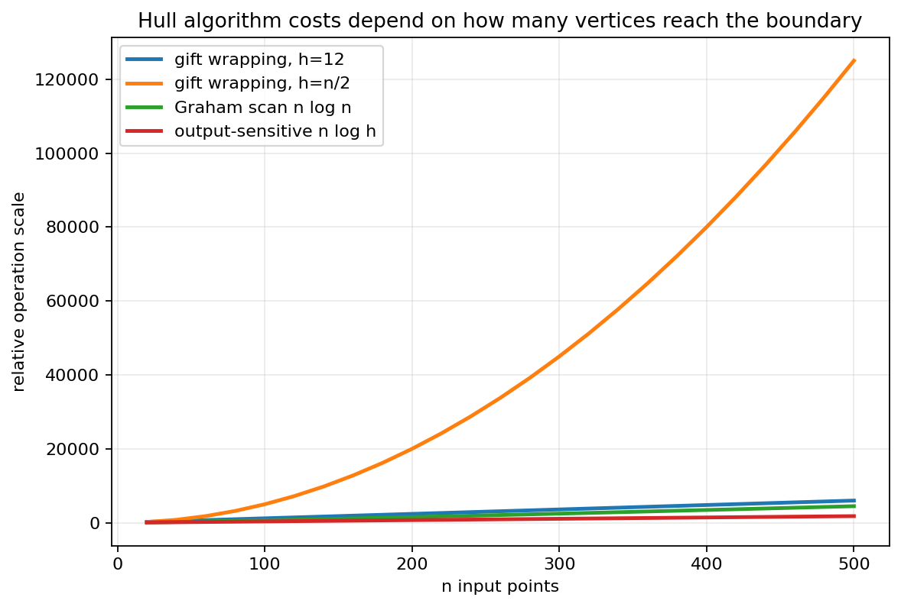

The convex hull turns a cloud of points into its smallest enclosing convex polygon, and the chapter uses that object to connect predicates, algorithms, invariants, and lower bounds.
Explain how the same determinant supports slow certificates, output-sensitive wrapping, divide-and-conquer filtering, and stack-based scanning.
The checked notebook artifacts compare gift wrapping, QuickHull, and Graham scan on the same point set and verify that their hull vertices agree.
Many downstream measurements depend only on extreme points: diameter, width, enclosing rectangles, and collision envelopes.
If the hull has \(h\) vertices and \(h \ll n\), output-sensitive algorithms can exploit the small final boundary.
The hull is not every point in the data set. Interior points may be important data, but they are irrelevant to the convex boundary.
A set \(S\) is convex when every segment \(\overline{ab}\) with \(a,b \in S\) stays inside \(S\).
\((1-\lambda)a+\lambda b \in S,\quad 0 \le \lambda \le 1.\)
An intersection of half-planes is convex, so a polygon bounded by supporting lines gives a clean model for hull geometry.
A point of \(P\) is extreme when it is a vertex of \(\mathrm{conv}(P)\), equivalently not expressible as a strict convex combination of other points of the hull region.
Most implementations return extreme vertices cyclically, not a filled set of all points in the polygon.
The same set of extreme points is not yet a usable polygon until adjacent vertices are in clockwise or counterclockwise order.
\(\operatorname{orient}(a,b,c)= (b_x-a_x)(c_y-a_y)-(b_y-a_y)(c_x-a_x)\)
Every edge test, tangent walk, and Graham stack pop is a question about this sign.

If \(p\) lies inside a triangle whose vertices are other input points, then \(p\) cannot be an extreme point of the full set.
A triangle is convex. Once \(p\) is inside that triangle, it is also inside the convex hull of all input points.
Trying many triples makes the test useful for definitions and debugging, not as the final production algorithm.
A directed edge \(ab\) is a hull edge when every other input point lies on the same side of the line through \(a\) and \(b\), allowing collinear boundary cases by convention.
Start at a known extreme point, then choose the next point so every other point is to the same side of the candidate directed edge.
Each accepted edge is locally certified against all points; chaining accepted edges wraps the whole boundary.
\(h\) accepted edges \( \times \) \(n\) scanned points \(= O(nh)\)
If only a few points lie on the hull, the algorithm can be much cheaper than sorting all \(n\) points.
If almost every point is extreme, then \(h \approx n\) and the scan becomes quadratic.
For an exposed segment, find the point farthest from its line. The triangle formed by the segment and that farthest point cannot contain future hull vertices in its interior.
Large discard triangles shrink the candidate sets rapidly.
Badly balanced splits can still leave many points for later calls, so QuickHull is heuristic-friendly but not worst-case magic.

Walks from one exposed vertex to the next; easy to explain and output-sensitive.
Splits the problem with farthest witnesses and discards triangle interiors.
Sorts by angle once, then keeps a stack whose turns stay consistent.
Choose a pivot, usually the lowest then leftmost point. Sort all other points by polar angle around the pivot, breaking ties by distance in a consistent way.
The angular order gives a simple walk around the outside, so the stack only has to repair local right turns.
Multiple points on the same ray from the pivot must be handled deliberately or the scan may keep a nearer collinear point on the boundary.

After each processed point, the stack is the convex hull of the processed prefix in angular order.
While the last two stack points and the new point make a forbidden right turn, remove the middle endpoint from the stack.
Each point is pushed once and popped at most once, so stack maintenance is \(O(n)\).
Decide whether boundary collinear points are reported, skipped, or coalesced into endpoints. The choice must be consistent across edge tests and stack pops.
Remove exact duplicates or define a stable comparison so the output boundary is not polluted by zero-length edges.
Floating data needs a tolerance policy; integer data can use exact arithmetic until products overflow the chosen type.
Every hull consumer should know whether the output is clockwise or counterclockwise and whether the first vertex is canonical.
A hull algorithm is only as reliable as its orientation sign and degeneracy conventions. The mathematics says what the predicate means; the implementation must preserve that meaning under real input data.

Map numbers \(x_i\) to points \((x_i,x_i^2)\). The lower hull lists those points by increasing \(x_i\).
If an algorithm outputs hull vertices in sorted boundary order, then it can be used to sort arbitrary numbers.
Comparison-based ordered hull output therefore inherits the \(\Omega(n \log n)\) lower bound from sorting.
Maintain a hull for processed points. When a new outside point arrives, find its tangents and replace the covered chain.
Compute left and right hulls, then merge them by walking upper and lower common tangents.
Output-sensitive \(O(n \log h)\) methods, rotating calipers, and onion layers all build on ordered hull boundaries.

Move many points onto a circle. Predict which algorithms slow down, then explain the change using \(h\), not just \(n\).